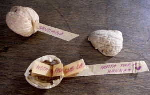

Un vale, un mensaje (escrito o dibujado) en una nuez y mandado por correo de ardilla.
A bonus or a message (written or drawn) in a nut. Send by the squirrel mail.
Ein Gutschein oder eine Nachricht (geschrieben oder gemalt) in einer Nuss. Verschickt mit der Eichhörnchen-Post.